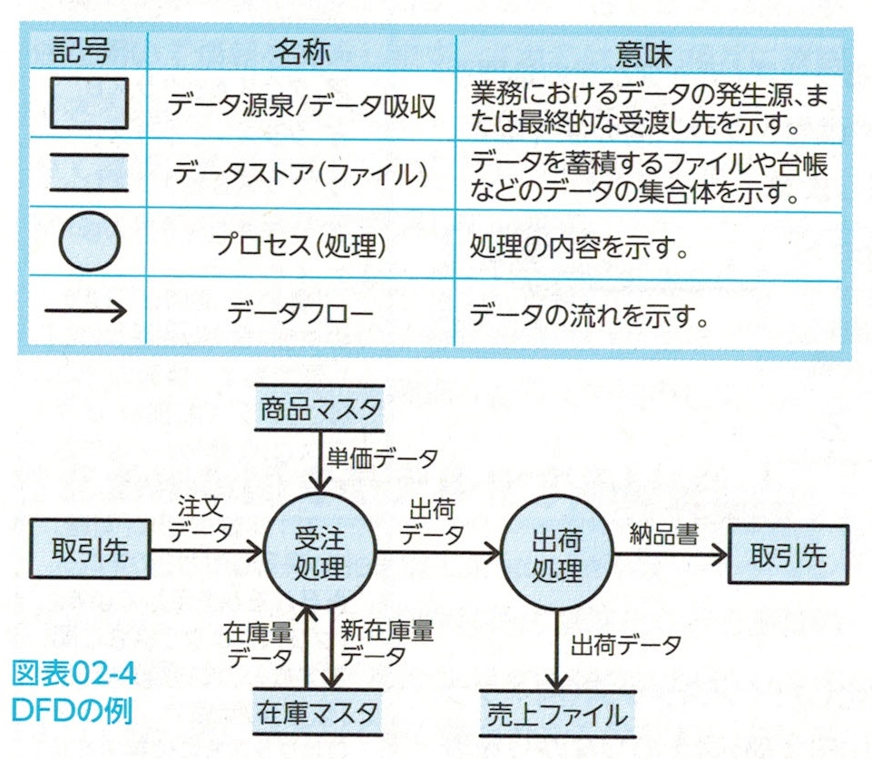
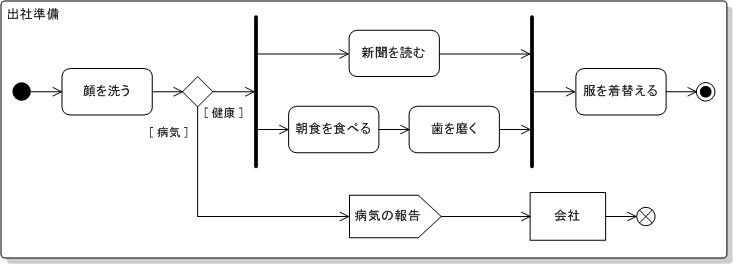
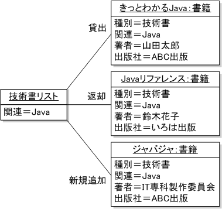
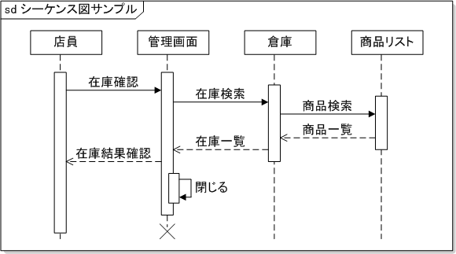

問１
開発プロセス

システム要件定義：ユーザの要求を明確化。
システム方式設計：システム要件を振り分ける。必要なシステム構成を決める。
ソフトウェア要件定義：構築するシステムのソフトウェアについて要件定義を確立する。
ソフトウェア方式設計：内部設計、機能単位のコンポーネントに分割、それらをつなぐインターフェースの仕様、DBの最上位レベルの仕様を設計する。個々のコンポーネントが完成したときにソフトウェア結合テストの仕様を決める。
ソフトウェア詳細設計：前工程で分割したものについて、詳細を設計する。ソフトウェアユニット（クラス、モジュール）のレベルに詳細化、DBの詳細内容、結合テストの仕様書も作成する。
ソフトウェア構築：コーディング、完成したユニットはテストデータを用いてユニットテスト（単体テスト）を行う。
テストおよび移行：完成したユニットは機能単位のソフトウェアに結合し、さらにテスト仕様に基づき、結合テストを行う。そして最後にソフトウェア結合し、システムを完成させる。ここでもテスト（システムテスト）を行う。完成後は移行計画に基づき、旧システムから新システムへの移行作業を行う。
- システム要件定義
- 〇
- ソフトウェア詳細設計
- ソフトウェア要件定義
問２
状態遷移図の説明
設計で用いる図式手法はさまざまある。その中に状態遷移図がある。
状態遷移図とは、情報や状態について時間的な移り変わりを図式化する手法です。

状態遷移図による流れを整理するため、状態遷移表を用いることもある。


- プログラム構造図：モジュール構成で開発を進めていく。
- 〇
- システム設計図：機能を入力、処理、出力に分け、階層的に表現する。
- DFD(Data Flow Diagram)↓
業務内容を、業務を構成する機能とデータの流れに着目して、モデル化したもの。
問３
UMLで用いる図
UML(Unified Modeling Language: 統一モデリング言語)はOMGによって統一表記法としてまとめられたもの。
アクティビティ図：対象システム全体の処理内容とその流れを表す。
まず朝起きて顔を洗います。健康ならば新聞を読みながら朝食を食べ、歯を磨き、そのあと服を着替えて出社します。もし体調が悪ければ｢病気である｣と会社に連絡して処理終了です。 ユースケース図：システムとその利用者とのやりとりを整理し、利用者の視点でシステムの機能を表す。
ユーザ（受験者）は「受験申し込み」、「受験料振込み」、「テストを受ける」という処理を行っています。
クラス図：システムの構成要素となるクラスの型や属性、クラス間関係など、そのシステムの概念を表現。
オブジェクト図：概念であるクラスを具体化したインスタンス同士のつながりを表現。
シーケンス図：オブジェクトの間に生じるメッセージのやりとりを表現。
このほかにもいろいろとあるので出てきたらその都度覚えてください。
- アクティビティ図：対象システム全体の処理内容とその流れを表す。
- コンポーネント図はクラスをまとめて1つの部品としたコンポーネントのつながりを表す。↓
- 〇
- 状態遷移図は状態が変化するシステムの動作を記述するために用いる。UML2.0に含まれる図ではない。
コンポーネント図：オブジェクトの間に生じるメッセージのやりとりを表現。
問４
データモデルの多重度
多重度とは物事が多重化されている度合い。一台のコンピュータで複数のプログラムを実行する場合、同時に並行して実行するプログラムの数を多重度ということもある。
- 同じ役割という制約はない。
- 〇
- 0以上なので参画しないこともある。
- 所属するのは１つの部門
問５
オブジェクト指向分析によるモデリング
オブジェクト指向の考え方はプロセスとデータは常に一体化して、一つの処理対象として扱われる。
- オブジェクト指向プログラミング：「モノ」を組み立てるように表現して、コンピュータに動作をさせる
- 手続き型プログラミング：上から下まで単調なルールで文章を読むように動作する
- 関数型プログラミング：数学の関数のイメージでデータに何かしらの処理をして答えを取得するように動作する
クラスとインスタンス
クラスとは共通する性質を持つものをまとめて名前をつけたもの
インスタンスとはクラスから生成された具体的な値を持つオブジェクト
答え．イ
問６
モジュール結合度
モジュール分割とはコンピュータプログラムを設計する際に、全体を何らかの基準に則って複数の部品(モジュール)に分割すること。モジュールは特定の機能や構造を表す適切な大きさのプログラムのまとまりであり、これを組み合わせてプログラム全体を構成していく。
モジュール分割の評価
- モジュールの独立性が確保されているか
- 処理効率の向上が実現されているか
- プログラムの信頼性が向上したか
- 部品化、再利用が容易になったか
- 保守が容易になったか
独立性は重要視されている。
モジュール強度：モジュール内部の命令の関連性の強弱を表す。強いほど独立性が高い。
モジュール結合度：モジュール間の関係を示す尺度。弱いほど独立性が高い。
答え．ウ
問７
テストデータの最小個数
答え．エ
問８
レビュー技法
レビュー：システム開発の工程において、それぞれ複数の関係者が集まり、各種の設計書やプログラムソースなどの成果物のあいまいな点や問題点を検出するために行う会議
インスペクション：モデレータと呼ばれる責任者が検討会議の準備と進行を担当。組織的に不具合の検出と修正を行う。モデレータ以外の参加者にも、インスペクタ(検証役)などの役割が振り当てられている。
答え．エ
問９
ホワイトボックステスト
ホワイトボックステストとはプログラム内部の処理や論理に着目したテスト
- 命令網羅：すべての命令を少なくとも1回は実行するテストケースを設計する。
- 分岐網羅(判定条件網羅)：判定条件の真偽を少なくとも1回は実行するテストケースを設計する。
- 条件網羅：判定条件が複数ある場合に、それぞれの条件が真・偽の場合を組み合わせたテストケースを設計する。
- 判定条件・条件網羅：判定条件網羅と条件網羅を組み合わせて設計する。
- 複数条件網羅：判定条件のすべての可能な結果の組合せを網羅し、かつ、すべての命令を少なくとも1回は実行するように作成する。
答え．ウ
問１０
ブラックボックステスト
ブラックボックステストとは、プログラム内部構造は意識せず、インターフェースだけに着目したテスト
答え．イ